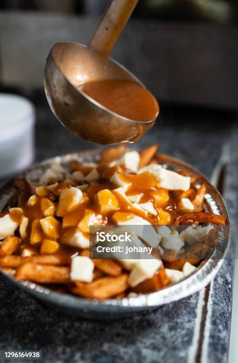

Ingrédients
- 1 kg de frites croustillantes (maison ou surgelées)
- 300 g de fromage en grains
- 2 c. à soupe de beurre
- 2 c. à soupe de farine
- 500 ml de bouillon de bœuf
- 1 c. à soupe de sauce soya (optionnel)
- Poivre au goût
Étapes
- Préparez les frites au four ou à la friteuse.
- Dans une casserole, faites fondre le beurre, ajoutez la farine et cuisez 1 minute.
- Versez graduellement le bouillon en fouettant; mijotez jusqu’à épaississement.
- Ajustez l’assaisonnement, ajoutez la sauce soya au besoin.
- Dressez : frites chaudes, fromage en grains, nappez de sauce.
Conseils
- Service: Servez très chaud pour un fromage bien couinant.
- Variante végétarienne: remplacez par un bouillon de légumes.